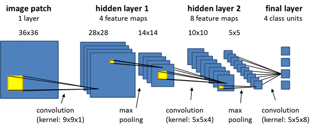
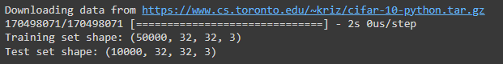
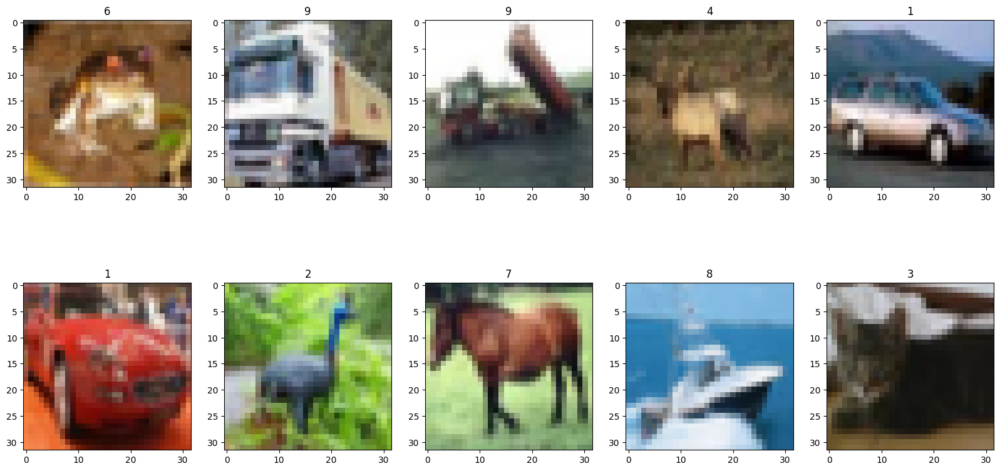
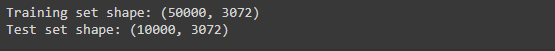
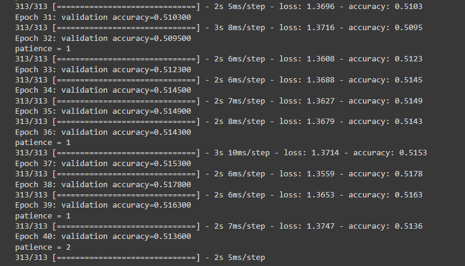
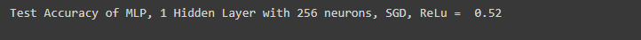
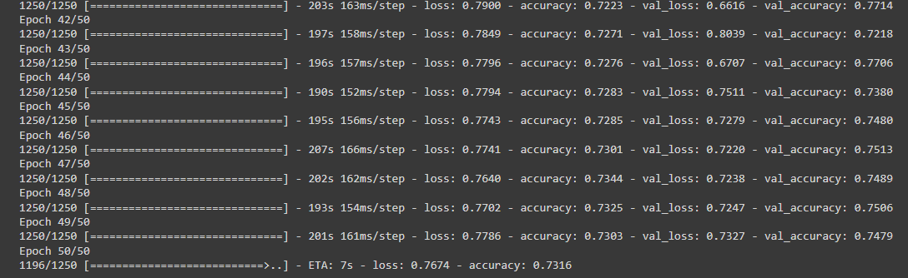
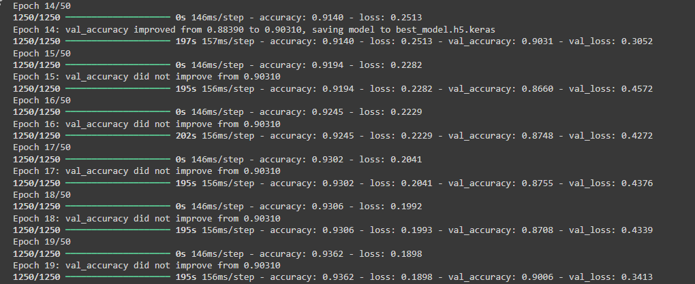
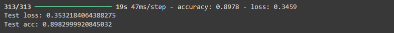

#Importing necessary libraries
import numpy as np
import pandas as pd
import tensorflow as tf
from sklearn.model_selection import train_test_split
from matplotlib import pyplot as plt
from tensorflow import keras
from sklearn.model_selection import StratifiedKFold
from sklearn.metrics import accuracy_score
from sklearn.utils.class_weight import compute_class_weight
#Data preprocessing and modeling related functions
from tensorflow.keras.utils import to_categorical
from sklearn.preprocessing import LabelEncoder, OneHotEncoder
from tensorflow.keras.preprocessing.image import ImageDataGenerator
#Cross-validation and evaluation related functions
from sklearn.model_selection import KFold
#Datamodeling related functions
from keras.models import Sequential, Model
from keras.layers import Conv2D, Activation, MaxPooling2D, Dropout, Flatten, Dense, BatchNormalization
from keras.optimizers import SGD
from sklearn import model_selection, preprocessing, metrics
from keras.applications import VGG16, ResNet50, InceptionV3Image Learning on CIFAR-10
Deep Learning with CIFAR-10

Introduction
Hello everyone, this post is intended to provide an in-depth comparison and discussion of various methods for image learning. I will add more detailed explanations as soon as I have the time.
Changelog:
\[1.0.0\] - 2024-07-20 - Initial deployment after consolidating course work and initial refinement.
This page demonstrates how to perform an image classification task using:
Multi-Layer Perceptron (MLP)
Convolutional Neural Network (CNN)
Transfer Learning using Resnet50 (in-progress)
for the CIFAR-10 dataset as a demonstration
Importing Libraries
Exploring the dataset
This Python code snippet uses TensorFlow’s Keras API to load the CIFAR-10 dataset and print the shapes of the training and test sets. The CIFAR-10 dataset is a popular dataset used for training machine learning and computer vision algorithms. It consists of 60,000 32x32 color images in 10 different classes, with 6,000 images per class.
# Load the CIFAR-10 dataset
cifar10 = tf.keras.datasets.cifar10
(x_train, y_train), (x_test, y_test) = cifar10.load_data()
print("Training set shape:", x_train.shape)
print("Test set shape:", x_test.shape)
The x_train.shape returns (50000, 32, 32, 3), indicating that there are 50,000 training images, each of size 32x32 pixels with 3 color channels (RGB).
The x_test.shape returns (10000, 32, 32, 3), indicating that there are 10,000 test images, each of size 32x32 pixels with 3 color channels (RGB).
This code will display the first 10 images from the CIFAR-10 training set with their respective classes.
images = range(0,10)
classes = list(np.unique(y_train))
plt.figure(figsize=(20,10))
for i in images:
plt.subplot(2,5,1 + i).set_title(classes[y_train[i][0]])
plt.imshow(x_train[i])
Next, let’s reshape the arrays to have only 2 dimensions
x_train = x_train.reshape(50000, 32 * 32 * 3)
x_test = x_test.reshape (10000, 32 * 32 * 3)
print("Training set shape:", x_train.shape)
print("Test set shape:", x_test.shape)
By reshaping the images into (50000, 3072) and (10000, 3072), each image is now represented as a 1-dimensional array (vector) of length 3072. This reshaping is commonly done to prepare the data for certain machine learning algorithms that expect input as 1-dimensional arrays rather than 3-dimensional images.
Next we perform the necessary pre-processing steps:
Splitting the Training Dataset: The training dataset is split into a new training set and a validation set using an 80/20 split to evaluate the model during training. The train_test_split function is used with test_size=0.2 and random_state=42 for reproducibility.
Data Type Conversion: The feature arrays are converted to float32 data type to ensure compatibility with TensorFlow
## Splitting "training" dataset further into train,validation datasets
x_train, x_valid, y_train, y_valid = train_test_split(x_train, y_train, test_size=0.2, random_state=42)
x_train = x_train.astype('float32')
x_valid = x_valid.astype('float32')
x_test = x_test.astype('float32')Min-Max Scaling: . A Min-Max scaling function normalizes the pixel values of the images to the range [0, 1], which helps in faster and more stable training of the model.
## Transform method: MinMax - is preferred when working with TensorFlow
def min_max_scaler(x_train, x_valid, x_test):
x_train_ms= x_train/255
x_valid_ms= x_valid/255
x_test_ms = x_test/255
return x_train_ms,x_valid_ms,x_test_ms
x_train_ms, x_valid_ms, x_test_ms = min_max_scaler(x_train, x_valid, x_test)One-Hot Encoding the Labels: The class labels are converted to one-hot encoded vectors using to_categorical, which transforms the integer labels into binary vectors. This format is required for categorical classification tasks where the neural network’s output layer expects binary vectors.
# By converting the target variables to one-hot format, we can ensure that they are compatible with the output layer of the MLP model, which expects the target variables to be represented as a vector of binary values.
y_train_1hot = to_categorical(y_train, 10)
y_valid_1hot = to_categorical(y_valid, 10)
y_test_1hot = to_categorical(y_test , 10)1. Implementing a Multi-Layer Perceptron for CIFAR-10 Classification
MLP with one hidden layer consisting of 256 neurons,sgd
Optimizer: SGD
Loss: Cross Entropy
Hidden Layers: 1 with 256 neurons
Activation Layer: (ReLU, softmax)
# Define the model architecture
model = keras.Sequential([
# Input Layer
keras.layers.Dense(512, activation='relu', input_shape=(32*32*3,)),
# Hidden Layers
keras.layers.Dense(256, activation='relu'),
keras.layers.Dropout(0.2),
# Output Layer
keras.layers.Dense(10, activation='softmax')
])
# Compile the model
model.compile(optimizer='SGD',
loss='categorical_crossentropy',
metrics=['accuracy'])
# Train the model using mini-batch learning
batch_size = 64
epochs = 40
patience = 5
best_acc = 0
for epoch in range(epochs):
for i in range(0, len(x_train_ms), batch_size):
batch_x, batch_y = x_train_ms[i:i+batch_size], y_train_1hot[i:i+batch_size]
model.train_on_batch(batch_x, batch_y)
# Evaluate the model on the validation set after each epoch
val_loss, val_acc = model.evaluate(x_valid_ms, y_valid_1hot)
print('Epoch %d: validation accuracy=%f' % (epoch+1, val_acc))
# Check if the validation accuracy has improved
if val_acc > best_acc:
best_acc = val_acc
patience = 0
else:
patience += 1
print("patience =",patience)
# Stop training if the validation accuracy does not improve after a certain number of epochs
if patience == 5:
break
# Evaluate final model on test set
test_pred = model.predict(x_test_ms)
test_accuracy = accuracy_score(np.argmax(y_test_1hot, axis=1), np.argmax(test_pred, axis=1))
print("Test Accuracy of MLP, 1 Hidden Layer with 256 neurons, SGD, ReLu = ",round(test_accuracy,2))

2. Implementing a Convolutional Neural Network (CNN) for CIFAR-10 Classification
Preprocessing
First off, let’s reproduce some of the preprocessing steps we did earlier:
# Load Data and Split into Train, Test dataset
(x_train, y_train), (x_test, y_test) = cifar10.load_data()
# Onehot Encoding
y_train = to_categorical(y_train, 10)
y_test = to_categorical(y_test , 10)
# Convert to float datatype
x_train = x_train.astype('float32')
x_test = x_test.astype('float32')
# Minmax Scaling
x_train /= 255
x_test /= 255Data Augmentation, Manual Splitting and Batch Processing
Next, this set of additional steps are required for preprocessing for CNN
# Data Augmentation
transform_train = ImageDataGenerator(
width_shift_range=0.1, # randomly shift images horizontally (fraction of total width)
height_shift_range=0.1, # randomly shift images vertically (fraction of total height)
rotation_range = 10,
horizontal_flip=True) # flip images horizontally
validation_train = ImageDataGenerator()
# Split Train dataset to get Validation dataset
validation_train = ImageDataGenerator()
train_set = transform_train.flow(x_train[:40000], y_train[:40000], batch_size=32)
validation_set = validation_train.flow(x_train[40000:], y_train[40000:], batch_size=32)Why do we need additional preprocessing steps for CNN?
Convolutional Neural Networks (CNNs) are specifically designed to work with image data. To enhance their performance, particularly when working with relatively small datasets like CIFAR-10, additional preprocessing steps are often employed. These steps help improve the model’s ability to generalize to unseen data and mitigate overfitting.
Data Augmentation: Increases the diversity of the training dataset by applying random transformations such as shifts, rotations, and flips. This helps the CNN model generalize better by training on a wider variety of image presentations. This is different from MLP earlier as MLPs typically work with flattened input data and do not benefit as much from spatial data augmentation
Manual Splitting and Batch Processing: The
ImageDataGeneratorin TensorFlow/Keras handles data augmentation and requires the data to be in a specific format (i.e., batches). Hence, the split is done manually to apply augmentation on the training set while keeping the validation set unchanged. CNNs typically require batch processing for efficient training. The flow method fromImageDataGeneratorcreates an iterator that generates batches of augmented data on-the-fly. This is especially useful when working with large datasets or when applying data augmentation. Manual splitting allows for better control over how data is augmented and fed into the model. By explicitly defining the training and validation datasets, we ensure that augmentation is applied only to the training data, not the validation data.
Building a Convolutional Neural Network for CIFAR-10!
Batch Size: 64
Epochs: 50
Padding: Same
Kernel: 3*3
(Convolution-BatchNormalisation-Relu-MaxPooling) x 2
Loss Function: Categorical Crossentropy
Dropout: 0.25,0.25,0.5
Padding: Same: This means that the output spatial dimensions will be the same as the input spatial dimensions after applying the convolution operation. This is achieved by adding zeros around the borders of the input tensor so that the output spatial dimensions match the input spatial dimensions.
Kernel: 3x3: A kernel size of 3x3 is a standard choice for convolutional neural networks because it provides a good balance between capturing local patterns and not overfitting to the training data. Larger kernel sizes can capture more complex patterns but may lead to overfitting, while smaller kernel sizes may not capture enough information.
(Convolution-BatchNormalisation-Relu-MaxPooling) x 2: This sequence of layers is commonly used in convolutional neural networks because it allows the model to learn increasingly complex features while reducing overfitting.
Batch normalization normalize the activations to improve generalization
ReLU activation functions introduce non-linearity to the model
Max pooling layers downsample the spatial dimensions to reduce computational complexity and help the model learn spatial hierarchies.
Loss Function: Categorical Crossentropy: This loss function is commonly used for multi-class classification problems like image classification. It measures the difference between the predicted probabilities and the true labels by calculating the negative log likelihood of the true class. This encourages the model to output high probabilities for the correct classes and low probabilities for the incorrect classe
Dropout is a regularization technique that helps prevent overfitting by randomly setting some of the neurons to zero during training. By using a high dropout rate (0.25) and (0.5), it is likely to reduce overfitting and contribute to better performance.
## CNN Archeticure
def CNN():
model = Sequential()
model.add(Conv2D(32, (3, 3), padding='same', input_shape=x_train.shape[1:]) )
model.add(Activation('relu'))
model.add(Conv2D(32,(3, 3)))
model.add(BatchNormalization())
model.add(Activation('relu'))
model.add(MaxPooling2D(pool_size=(2, 2)))
model.add(Dropout(0.25))
model.add(Conv2D(32,(3, 3)))
model.add(BatchNormalization())
model.add(Activation('relu'))
model.add(MaxPooling2D(pool_size=(2, 2)))
model.add(Dropout(0.25))
model.add(Flatten())
model.add(Dense(512))
model.add(BatchNormalization())
model.add(Activation('relu'))
model.add(Dropout(0.5))
model.add(Dense(10))
model.add(Activation('softmax'))
# Train model
model.compile(loss='categorical_crossentropy', optimizer='adam', metrics=['accuracy'])
return model
cnn = CNN()
cnn.fit(train_set,
epochs=50,
batch_size=64,
validation_data=validation_set, shuffle=True)
loss, acc = cnn.evaluate(x_test, y_test, verbose=1)
print('Test loss:', loss)
print('Test acc:', acc)
3. Leveraging a Pretrained Model for CIFAR-10
ResNet50 is known for its high accuracy and relatively efficient parameter count among pretrained models. We should adjust its input dimensions to fit the CIFAR-10 dataset rather than using its default settings. See https://paperswithcode.com/sota/image-classification-on-imagenet to see list of pretrained models and their performance, using ImageNet dataset as benchmark.
First, let’s illustrate a method that is conceptually sound but inefficient for using pretrained models.
Resizing layer is added to adjust the image dimensions from the original 32x32 pixels to 224x224 pixels. This step is crucial because ResNet50 was originally trained on the ImageNet dataset, where images have a resolution of 224x224 pixels. By resizing our images to match this resolution, we align them with the input format the model was designed for, ensuring that the features learned from ImageNet are effectively utilized. This alignment helps maintain the integrity of the pretrained model’s architecture and improves its performance on our specific dataset.
Early Stopping is employed to enhance training efficiency by halting the training process when the model’s performance ceases to improve on the validation dataset. This prevents unnecessary computations and helps avoid overfitting.
ModelCheckpoint callback is used to save the model’s weights at specific points during training, ensuring that the best-performing model (according to validation metrics) is preserved. This way, if the training process is interrupted or if we need to revert to a previous state, we can load the saved weights and continue from the best checkpoint. Together, these techniques help optimize both the training time and the final performance of the model.
pretrained_model = ResNet50(input_shape=(224, 224, 3),
include_top=False)
pretrained_model.trainable = True
model = Sequential([
Resizing(224, 224), # Resize images to 224x224
pretrained_model,
BatchNormalization(),
GlobalAveragePooling2D(),
Dense(1024, activation='relu'),
Dropout(0.4),
Dense(10, activation='softmax', dtype='float32'),
])
# Compile the model with the same optimizer and loss function
model.compile(optimizer='adam',loss='categorical_crossentropy',metrics=['accuracy'])
# Define early stopping parameters
early_stopping_patience = 5 # Stop training if no improvement after 5 epochs
early_stopping_min_delta = 0.01 # Stop training if improvement is less than 0.01%
# Create EarlyStopping callback object
early_stopping = EarlyStopping(monitor='val_loss', patience=early_stopping_patience, min_delta=early_stopping_min_delta)
# Define where to save the best model based on validation accuracy
best_model_path = 'best_model.h5'
# Create ModelCheckpoint callback object
model_checkpoint = ModelCheckpoint(best_model_path + '.keras', monitor='val_accuracy', mode='max', verbose=1, save_best_only=True)
# Continue training from the last saved model
model.fit(train_set,
epochs=50,
batch_size=64,
validation_data=validation_set, shuffle=True,callbacks=[early_stopping, model_checkpoint])
# Evaluate final model on test set
loss, acc = best_model.evaluate(x_test, y_test, verbose=1)
print('Test loss:', loss)
print('Test acc:', acc)

We achieved a high test score of 0.898, but the question remains: is this the best way to use transfer learning?
To determine if our approach to transfer learning is correct, we first need to understand the principles behind it. Transfer learning is designed to enhance efficiency and reduce computational costs by leveraging pretrained models. Instead of retraining a model from scratch, we use an existing model that has already been trained on a large dataset. This typically involves “freezing” the earlier layers of the model, which means keeping their weights unchanged, and only training the final layers on our specific dataset. This strategy allows us to build on the learned features of the pretrained model, thus saving time and computational resources while potentially achieving better performance with less data.
In the case above, we had set pretrained_model.trainable = True which we should have set to False to fully leverage the full benefits of a pretrained model.
A Better way to utilise a pretrained model: Firstly, instead of incorporating a resizing layer within the model, we should resize our images to 224x224 pixels during the preprocessing step.
Can you think of the rationale for this?